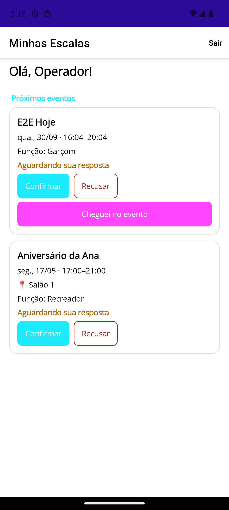
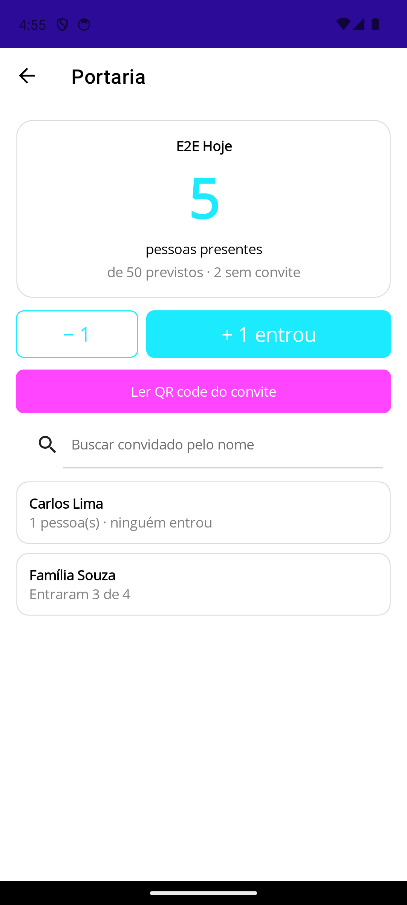
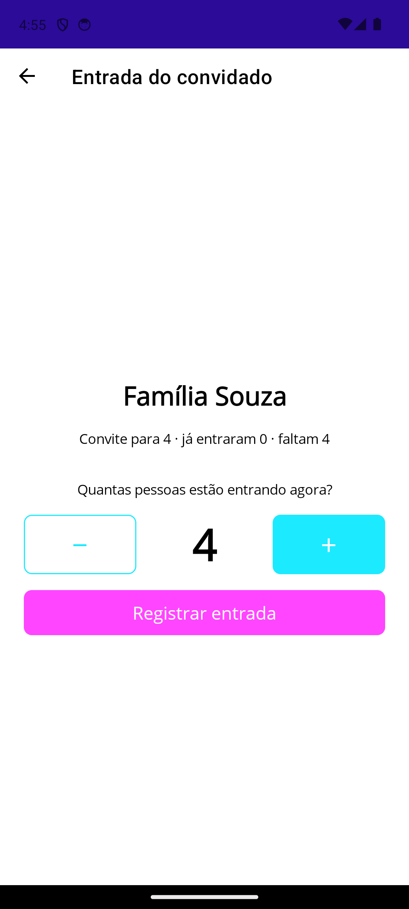

Projeto Integrador · 5º semestre · Marco 1 (EP2)
O app da equipe do buffet no dia da festa.
Equipe L2Tech — Luis Felipe Veronezi · Leonardo Antoniassi · Bruno Righi
Ideia inicial
Sistema web feito para um buffet ("Mais Alegria", depois "Festify").
Vira o Celebri: cada buffet assina e usa com a própria marca.
7 histórias genéricas: login com código da empresa, escalas, QR, catraca, WhatsApp, fotos, offline.
2 / 12
Refinamentos
| Antes | Depois |
|---|---|
| App genérico | Telas por função: portaria, garçom, cozinha |
| QR = 1 pessoa | QR para 1 ou N pessoas, quantidade editável, lista opcional |
| Comanda com cobrança | Comanda para a cozinha (no buffet tudo é incluso) |
| Código da empresa | Só o e-mail + código de primeiro acesso |
| Escala simples | Função por evento, check-in e intervalo configurável |
3 / 12
O que é o Celebri Staff
Entrar com e-mail · minhas escalas · confirmar · check-in
Contador de pessoas · QR do convite · busca por nome
Mapa das mesas · comanda · alerta de alergia
Pedidos · cardápio com horários · estoque
4 / 12
Escopo e limitações
As telas por função + o que o painel web prepara para o app: convites, mesas, cardápio, funções.
Financeiro e contratos, cobrança de comanda, iOS, publicação na Play Store.
Atualiza a cada ~8 s (não é tempo real), sem modo offline, código por e-mail depende de SMTP.
5 / 12
Marcos e épicos
EP2 · 30/09 · CONCLUÍDO
Base, White Label, login e escalas (+ operação adiantada)
EP3 · 15/11 · PRÓXIMO
Operação do evento homologada, adulto/criança, cronograma
EF · 10/12 · PLANEJADO
WhatsApp, ocorrências com foto, offline, build final
6 / 12
Épico 1 · o que propusemos
1
Estrutura do app conectada à API central (autenticação JWT)
2
Login com White Label: cores e logo do buffet (US01)
3
Escalas da equipe com aceitar e recusar (US02)
7 / 12
Épico 1 · o que realizamos
✓ Login por e-mail + primeiro acesso com código
✓ Escalas: confirmar, recusar e check-in
✓ Adiantado: portaria, garçom e cozinha (app + painel)
256
testes automatizados no backend
0
erros no build do app



8 / 12 · Telas: escalas, portaria, entrada do convidado
Jornada do usuário · portaria
1 · PAINEL
Gerente cadastra o convite para 4 pessoas
2 · WHATSAPP
A família recebe o link com o QR
3 · APP
Marina abre a Portaria pela escala do dia
4 · LEITURA
Lê o QR: "Família Souza · faltam 4"
5 · PARCIAL
Só o pai chegou: registra 1; depois, os outros 3
6 · CONTADOR
Total igual para todos os porteiros e no painel
9 / 12 · Sem QR? Busca pelo nome.
Desafios
| Desafio | Como enfrentamos |
|---|---|
| Ambiente Android no Windows | JDK, SDK e pasta de build fixos e documentados |
| Bugs que só apareciam rodando | Testar contra a API real e o emulador, não só mocks |
| Login só com e-mail era inseguro | Código de 6 dígitos com hash, validade e tentativas |
| Vários porteiros ao mesmo tempo | Contagem atômica no banco (10 simultâneas, sem perda) |
| [Desafio de organização da equipe] | [Como a equipe resolveu] |
10 / 12
LGPD e próximos passos
Buffet = controlador · Celebri = operadora
QR leva só um código aleatório
Senha e código em hash · cada buffet só vê seus dados
11 / 12
Obrigado! Perguntas?
github.com/leoantoniassi/celebri-staff · github.com/leoantoniassi/celebri